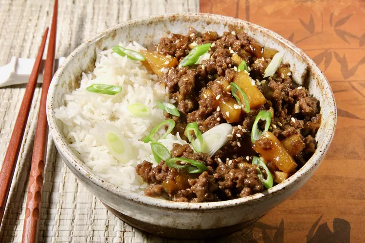

Teriyaki Ground Beef Skillet
Home

Description
This simple recipe features browned ground beef simmered in a skillet with teriyaki sauce, water chestnuts, pineapple, garlic, and ginger. It's ready in about 25 minutes.
Ingredients
- 1 pound lean ground beef
- ½ cup finely chopped onion
- ¾ cup thick teriyaki sauce
- ¼ cup chopped water chestnuts, drained
- ½ (8 ounce) can pineapple tidbits, drained
Steps
- Bring a large pot of lightly salted water to a boil. Add potatoes, and cook until tender but still firm, about 15 minutes; drain, and return to pan.
- While potatoes are boiling, heat oil in a large skillet. Cook ground beef with onion, red pepper, and garlic until beef is evenly brown. Stir in beef broth, ketchup, soy sauce, Worcestershire sauce, and curry powder. Bring to a boil, and simmer 3 to 4 minutes. Mix cornstarch with a little water to form a paste, then stir into skillet with tomatoes, peas and carrots. Cook until thickened; season with salt and pepper. Spoon into a casserole dish.
- Preheat oven on broiler setting. Add milk and butter to cooked potatoes, and whip until smooth and creamy. Spoon over meat mixture. Sprinkle top with shredded cheese.
- Place under broiler for 3 to 5 minutes, or until cheese is melted and speckled with brown.